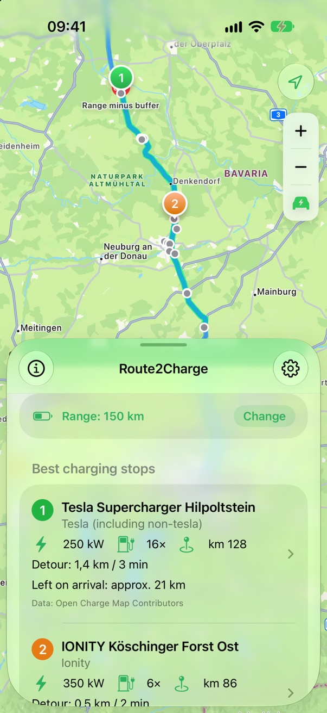
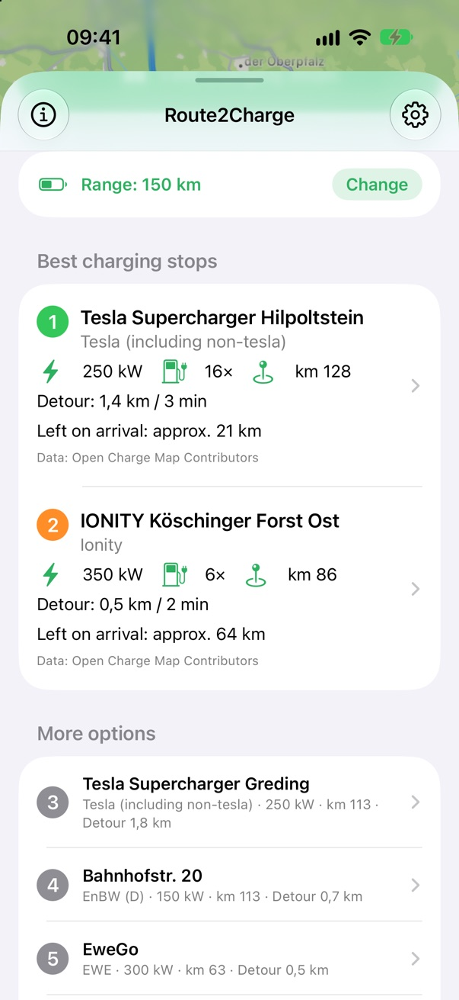
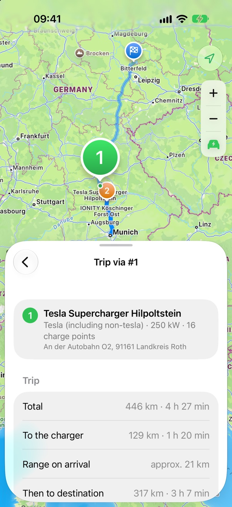

1
Set your destination
Start from where you are or pick any starting point. Routing runs on Apple Maps.
Tell Route2Charge where you’re going and how far you can still drive. It shows the two best fast chargers along your route – right before your range runs low.

No planning marathon – just the answer you need when the range gets tight.
Route2Charge searches the stretch right before your range limit – and picks two real alternatives, a few kilometres apart.
Start from where you are or pick any starting point. Routing runs on Apple Maps.
Enter your remaining range in km, your battery percentage – or simply say: I want to charge around km 150.
Route2Charge checks every fast charger in your charging window and shows the best two plus further options – with real detours, not guesses. Tap one to see your whole trip.
Fast chargers first. Less waiting, more driving.
Every candidate is checked with real routing – chargers on the wrong side of the motorway drop out.
Charge late enough to make progress, early enough to stay relaxed. Your safety buffer always applies.
Your second option comes from a different network whenever possible – and you can hide Tesla Superchargers.
Your route, the charging window and your best options – with power, detour and the range left on arrival. Pick a charger and see the whole trip, start to destination, right in the app.


No account.No tracking.No server.
Route2Charge is built to know as little about you as possible. That’s not a feature we added – it’s how the app works.
Read the privacy policy →